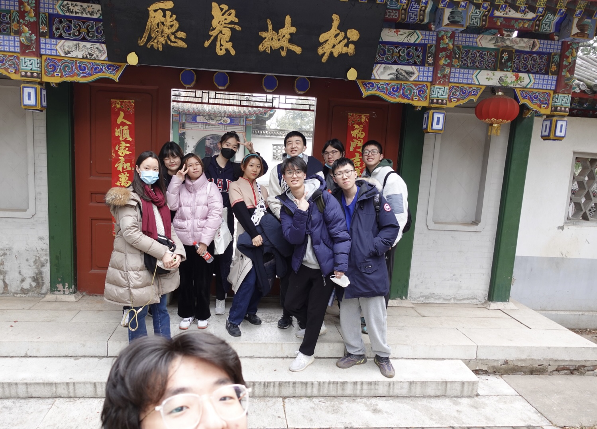

风光景色

我以前说我就是喜新厌旧，深圳就是这样，一切都是崭新的。但现在我也开始喜欢北京了，带点零件老化的钝感反而是值得我去爱的...
后海
真的很喜欢后海，可能是因为去的那天刚好天气特别好，肉眼下闪着光的湖面我永远也拍不出来。见到的所有都很舒服，舒服到让我觉得住在这里也很好，路边有五块钱的糖葫芦，中年人和年轻人都会去的Bar聚在一起，看到游野泳的老头甚至想到“要是住这我爸很难不会被他们带着一起游！”小公园的运动设施让我想起长大之后再也没去过的小区广场，有老人围着象棋桌子打牌......
让我用一句话形容后海就是“像北京又不像北京”，或者说是北京的更具象化，我们小镇居民对北京的幻想是繁华的、看起来伟光正的，但是后海让我看到北京也可以是有点陈旧又很缓慢的，在书里读过的北京铺开在我眼前了。
让我用一句话形容后海就是“像北京又不像北京”，或者说是北京的更具象化，我们小镇居民对北京的幻想是繁华的、看起来伟光正的，但是后海让我看到北京也可以是有点陈旧又很缓慢的，在书里读过的北京铺开在我眼前了。
南锣鼓巷
南锣鼓巷距离后海很近，去后海的话就会顺道去南锣鼓巷逛一逛，虽然外观保留了些老北京的风味，但随着旅游业的发展也逐渐成了外地游客的聚集地。不过尽管如此，鼓楼周边一些美食还是值得一吃的！
故宫
对于故宫，我的印象就是，好像也没什么特别的，但是不去的话会有些意难平。如果想要听解说可以偷偷跟在导游后头，建筑旁的介绍也很贴心！很适合拍照（尤其是游客照hhh）有意思的是能看到很多人穿着清朝服饰来拍照，无论老小，和朋友去的时候被穿着花盆底鞋因跨不过门槛而委屈的小朋友萌翻了！
香山
没有赶在人们聚集在香山的季节，而是选择在一个普通的好天气里一起爬山。一路上虽然没有漫山的红叶，但偶尔转头看一眼，还是会为地面上的建筑和一望无际的天空所震撼。
朋友在出发的前一天做了紫菜包饭和三明治，我们坐在山顶的亭子里享用；喜欢拍vlog的朋友用相机记录着这一天，喜欢跳舞的朋友在空地上尽情释放，我们在商店里买了一块小木牌，写上一些想起来会觉得难为情的话，挂在大概是心愿墙的无数木牌之中...虽然很土但很幸福!!!
朋友在出发的前一天做了紫菜包饭和三明治，我们坐在山顶的亭子里享用；喜欢拍vlog的朋友用相机记录着这一天，喜欢跳舞的朋友在空地上尽情释放，我们在商店里买了一块小木牌，写上一些想起来会觉得难为情的话，挂在大概是心愿墙的无数木牌之中...虽然很土但很幸福!!!

香山也有松林oo